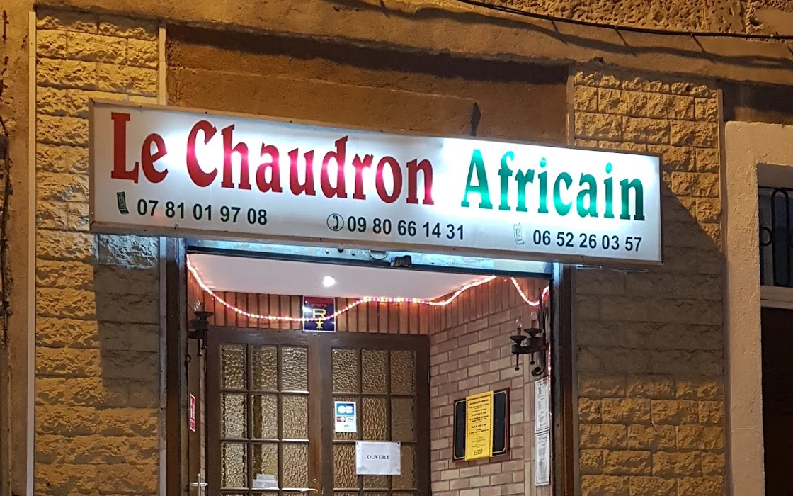

Accueil
Fondé en [année], Le Chaudron Africain est né d'une passion pour la richesse et la diversité de la cuisine africaine. Notre mission est d'offrir une expérience authentique à nos clients, en leur faisant découvrir les saveurs exotiques des différents pays africains.
Nous sélectionnons avec soin nos ingrédients pour assurer une qualité irréprochable et une fraîcheur maximale. Nos plats sont inspirés des recettes traditionnelles transmises de génération en génération, et revisitées avec une touche contemporaine.
Nos chefs, avec à leur tête [Nom du chef principal], sont des ambassadeurs de la gastronomie africaine. Originaires de régions telles que l'Afrique de l'Ouest, le Maghreb, et l'Afrique Australe, ils apportent chacun leur expertise et leur passion pour créer une carte variée et savoureuse.
Le Chaudron Africain est plus qu'un restaurant : c'est un lieu de rencontre et de partage, où chaque repas est une occasion de célébrer la vie et l'amitié. Venez nous rendre visite et laissez-vous emporter dans un voyage culinaire inoubliable.
Nous sommes fiers de notre engagement envers la communauté, en soutenant les producteurs locaux et en participant à des initiatives durables. Rejoignez-nous dans cette aventure gourmande où chaque plat raconte une histoire.
Bienvenue au Chaudron Africain, où nous vous apportons les saveurs authentiques de l'Afrique directement à votre table. Rejoignez-nous pour un voyage culinaire à travers l'Afrique.
Avis des Clients
"Le Chaudron Africain offre une expérience culinaire exceptionnelle avec une ambiance chaleureuse. Un véritable voyage gustatif!"
- Jeanne D., 20 Mars 2021
"Des plats savoureux et authentiques, une équipe accueillante et un cadre magnifique. Je recommande vivement ce restaurant!"
- Marc B., 10 Avril 2022
"À chaque visite, c'est une nouvelle découverte. Les saveurs africaines sont parfaitement mises en valeur. Coup de cœur pour le Mafé!"
- Amélie T., 15 Janvier 2024